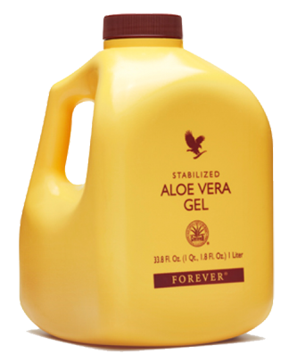

Alavijo sultys
Patentuotos ir stabilizuotos Aloe Vera sultys beveik identiškos šviežiam lapo minkštimui. Sultyse yra visi vitaminai (A, visi B grupės, C, D, E) ir mineralai (geležis, kalcis, kalis, fosforas, kt.), taip pat labai retas vitaminas B12, kuris randamas tik keliuose augaluose. Šios sultys yra labai svarbus maisto priedas vegetarams (nevartojant mėsos organizmui trūksta kai kurių vitaminų ir mineralų).
Sudėtis: 96 proc. Aloe Vera želė, sorbitolis, askorbo rūgštis, citrinos rūgštis, kalio sorbatas, natrio benzonatas, ksantano derva, tokoferolis (vit.E).
Vartojimas: 60 ml (po 30 ml du kartus per dieną prieš valgį užgeriant vandeniu). Prieš pradedant vartoti gerai suplakti. Atidarius laikyti šaldytuve.